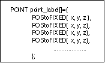
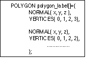
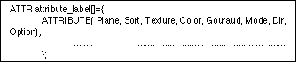
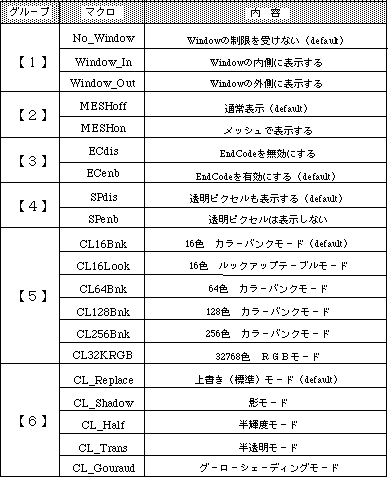
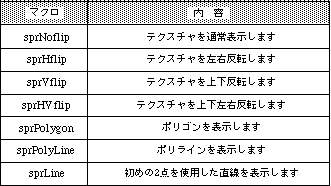
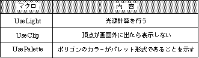
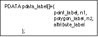
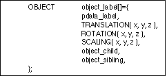

Return to previous page | Return to menu ｜ Go to next page
This chapter explains the model data, material name specifications, and texture data structure handled by Sega Saturn.
Model data here refers to three types of data: point data of three-dimensional coordinates (x, y, z), polygon data formed by four of them, and attribute data representing attributes of the polygon. This is a set.
The general format when the model name is “label” is shown below.

POINT: Point data x, y, z: Float type coordinate values
0, 1, 2, and 3 point data indexes in order from the top.

NORMAL: Normal vector x, y, z: Float type coordinate values VERTICES: Point data of 4 points forming a polygon
In the case of a triangular polygon, the last one point is repeated to obtain four points of polygon data.

ATTR: attribute Plane: Attribute with or without backside judgment Sort: Representative point of Z sort Texture: Texture name (No.) Color: Color data Gouraud: Gouraud shading attribute Mode: Drawing mode Dir: Polygon or texture status Option: Option, other functionsThe
attribute has the above eight parameters. Here are the symbols that should actually be output for each parameter and their contents.
Single_Plane: With back side judgment Dual_Plane: No back side judgment
SORT_MIN: Recent points SORT_CEN: Center point SORT_MAX: Farthest point SORT_BFR: Display in front of the most recently registered polygon
No_Texture: For polygons Texture name: For texture (macro indicating texture data) For details, refer to “Section 4-3: Specification of texture data”.
No_Palet: For textures C_RGB (r, g, b: Color data for polygon R, g, and b represent the three primary colors, and enter a decimal value from 0 to 31.
No_Gouraud: No goo Address: Relative address of Gouraud shading table
[Mode]
*
[Dir]

[Option]

Plane, Sort, Mode among the above parameters can be obtained by specifying the material name in the next section.

pdata_label: Indicates the PDATA type address passed to SGL. * point_labe: Indicates a POINT type address. * nl: Indicates the number of points. * polygon_label: Indicates a POLYGON type address. * n2: Indicates the number of polygons. attribute_label: Indicates an ATTR type address.

pdata_label: Indicates a PDATA type address. * TRANSLATION: Indicates the movement amount. ROTATION: Indicates the rotation amount. SCALING: Indicates the enlargement amount. * object_child: Indicates the child OBJECT type address. * object_sibling: Indicates the sibling OBJECT type address.
Please refer to the “design 3” sample source for how to use this structure.